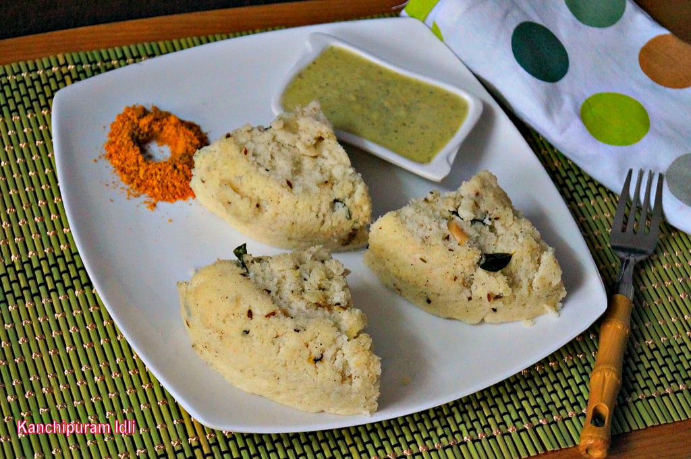

Raw Rice - 1 cup
Idli Rice (or boiled rice) - 1 cup
Urad dal - 1 cup
Salt - as needed
Crushed black pepper - 2 tsp
Cumin seeds - 1 tsp
Dry ginger powder - 1 tsp (or use fresh grated ginger)
Sesame oil - 1 tblsp
Urad dal (or channa dal) - 2 tsp
Mustard seeds - 1 tsp
Curry leaves - few (chopped)
Cashew nuts - 10 (broken)
Asafoetida - 1/4 tsp
Soak both the rice together in one bowl. In another bowl soak the washed urad dal. Let it soak for at least 2 hours.
First grind the soaked ural dal with little water to get a very light and fluffy batter.
Next grind the rice to a coarse paste. Mix both the batter together with required salt.
Let it rest in a warm place and ferment. It may take anywhere between 6 hours to 10 hours depending on the warmth. When the batter is fermented it will considerably increase in volume and have a sour fermented aroma.
With the batter ready, mix the ginger, pepper and cumin with the batter. You can go ahead and make idlis at this stage.
To make it extra tasty, make a seasoning of mustard seeds, curry leaves, cashew nuts, urad dal and asafoetida. Add this to the batter and mix well.
Pour the batter in greased idli molds or tumblers or a deep pan. Steam it for 15-20 minutes on high flame. Insert a toothpick or knife to check if the idli is cooked from the inside. When inserted, no batter should stick to it.
If the idlis are cooked fully, switch off. Let it cool for about 5 minutes before removing.
Gently run a knife around the edges of the tumblers to release the idlis. Turn it upside down and tap it. The idlis should easily fall off. Serve hot.